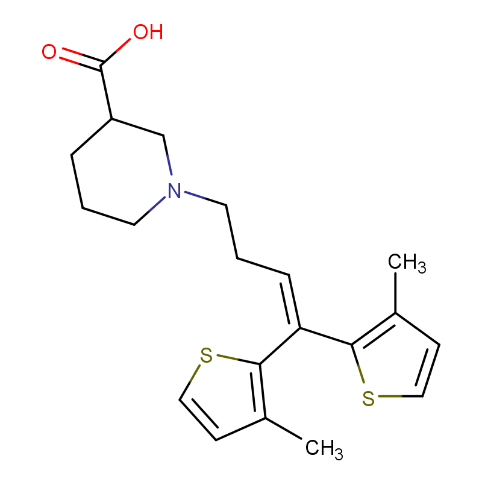
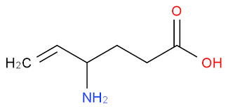

El Tiagabina y la Vigabatrina atraviesan la barrera hematoencefálica y actúan sobre el sistema GABAérgico, aumentando la disponibilidad de GABA en el sistema nervioso central.
La tiagabina actúa inhibiendo de manera selectiva el transportador de recaptación de GABA (GAT-1) en la membrana presináptica y en células gliales, lo que disminuye la reentrada de GABA hacia el interior celular y aumenta su concentración en la hendidura sináptica.
Por otro lado, la vigabatrina actúa como un inhibidor irreversible de la enzima GABA transaminasa (GABA-T), responsable de la degradación del GABA. Al bloquear esta enzima, reduce el metabolismo del GABA y eleva sus niveles intracelulares y posteriormente su liberación sináptica.
Aunque actúan por mecanismos distintos, ambos fármacos incrementan la disponibilidad de GABA, lo que potencia la activación de los receptores GABA_A y GABA_B, aumentando la inhibición neuronal.
Como consecuencia, se incrementa la entrada de Cl- (vía GABA_A) y la inhibición de la excitabilidad neuronal, reduciendo la generación y propagación de descargas epileptiformes.
Como resultado final, ambos aumentan GABA por diferentes mecanismos, inhibición de recaptación (tiagabina) e inhibición de degradación (vigabatrina), lo que potencia la inhibición neuronal y el efecto anticonvulsivante.
El Tiagabina y la Vigabatrina aumentan la disponibilidad de GABA, la tiagabina inhibe su recaptación (GAT-1) y la vigabatrina inhibe su degradación (GABA transaminasa). Es decir, incrementan los niveles de GABA, potencian la inhibición GABAérgica y disminuyen la excitabilidad neuronal, lo que reduce las convulsiones.
Audio explicativo
Material visual

